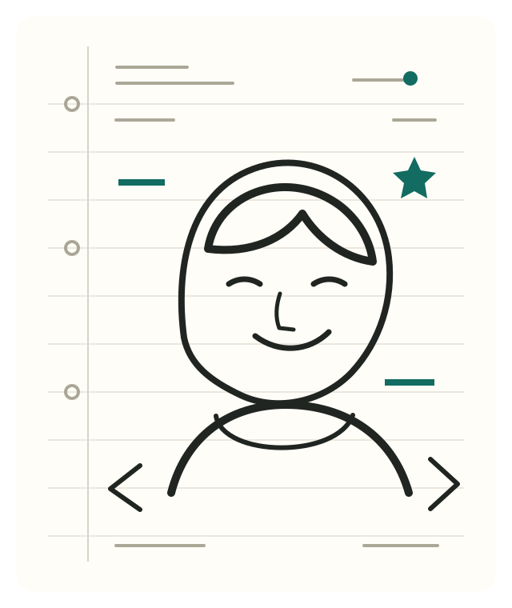

A
Problem solving
Aim for clear approaches to questions, constraints, and possible solutions.
Developer portfolio
I’m Juyeong Maing. My goal is to become a better developer, one step at a time.

01 / About
There is always room to grow, with the goal of becoming a better developer one step at a time.
This page is a simple index of the public repositories available through the linked GitHub profile.
02 / Focus
A
Aim for clear approaches to questions, constraints, and possible solutions.
B
Grow across the technologies and ideas that shape the web.
C
Deepen understanding of the tools that support software development.
03 / Public repositories
This section loads repositories from the linked public GitHub profile.
04 / Contact
Write a note below. This demo validates locally and never sends your message.
View the GitHub profile